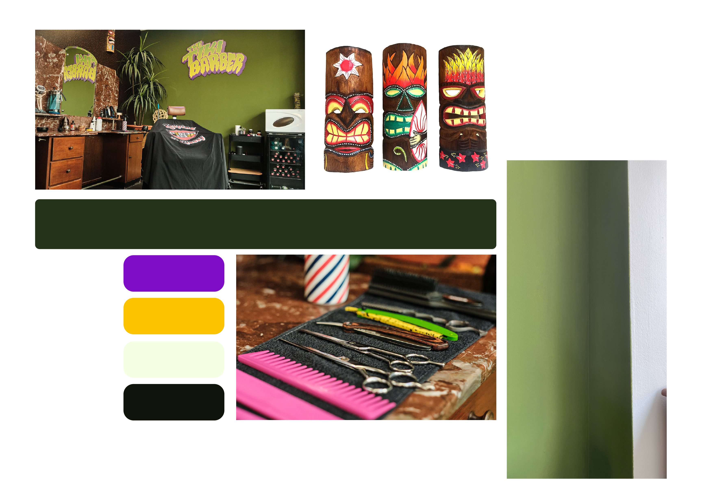

Briefing
Voor de website van Tiki Barber heb ik een briefing gehouden met eigenaar Ruben Ensink. We bespraken de gewenste stijl, kleuren, lettertypes en functionaliteiten, waaronder een makkelijk vindbaar reserveringssysteem.
Na de briefing heb ik een moodboard gemaakt met de kleuren, lettertypes en iconen voor de website.
